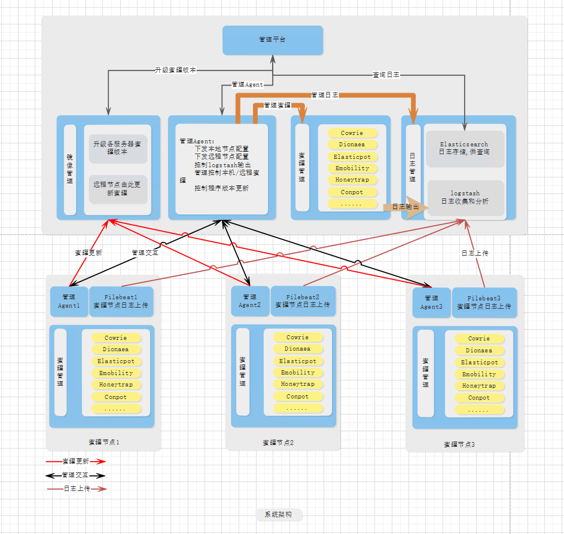
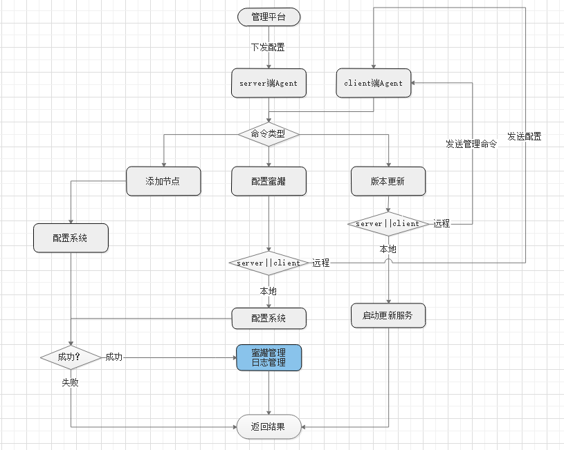
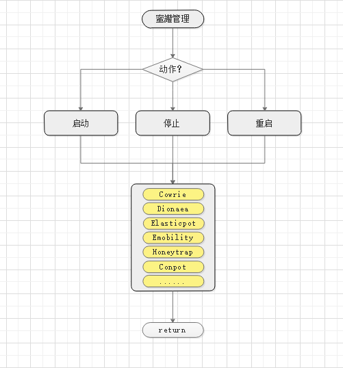
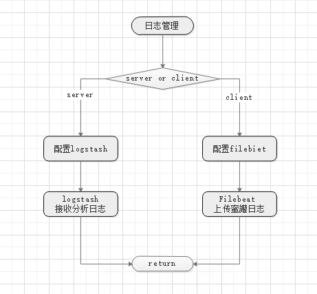

蜜罐框架搭建
Table of Contents
1. 架构概览

2. 蜜罐
2.1. 蜜罐介绍
- Dionaea蜜罐
- Dionaea蜜罐的设计目的是诱导和记录攻击行为，能捕获攻击载荷和恶意代码样本。它基于监听端口来模拟各种服务，能够捕获攻击者的连接请求和攻击载荷，同时记录攻击来源IP、来源端口、目的端口、所用协议等，能为后续分析提供需要的数据支持。Dionaea是一种低交互式蜜罐，它只提供相应服务的基础模拟，能够和攻击者进行初始阶段的数据模拟交互，因此Dionaea蜜罐风险较低。
- Glastopf蜜罐
- Glastopf是一款低交互的Web应用蜜罐软件，该蜜罐采用Python语言开发，能够跨平台运行，在Windows、Linux、OSX操作系统环境下均能方便部署，启动后，Glastopf默认监听80端口，同时也可自定义监听端口。Glastopf可处理GET、POST、HEAD三种HTTP数据包，同时能够对数据包的Base64编码进行处理。
- Cowrie蜜罐
- 基于kippo更改的中交互ssh蜜罐, 可以对暴力攻击账号密码等记录，并提供伪造的文件系统环境记录黑客操作行为, 并保存通过wget/curl下载的文件以及通过SFTP、SCP上传的文件。 （ 注：Kippo蜜罐是一款专门针对22端口的SSH服务进行仿真的蜜罐软件，由于互联网上始终暴露很多存在极大脆弱性的SSH服务，导致这种针对SSH的扫描和爆破的攻击方式至今依旧有效。）
- P0f指纹识别工具
- P0f(passive OS fingerprinting)是一款开源的指纹识别软件,它通过分析源主机发出的数据包来识别攻击者的操作系统和应用软件类型，而且，P0f集成了大量的设备和工具的指纹库。本课题主要利用P0f工具的指纹库对攻击者使用的攻击工具类型进行识别，为分析攻击者的攻击手法提供数据基础。
- Honeytrap
- 观察针对TCP或UDP服务的攻击，作为一个守护程序模拟一些知名的服务，并能够分析攻击字符串，执行相应的下载文件指令。
- Conpot蜜罐
- 低交互工控蜜罐，提供一系列通用工业控制协议, 能够模拟复杂的工控基础设施。
- Elasticpot
- 模拟elastcisearch RCE漏洞的蜜罐，通过伪造函数在/,/_search, /_nodes的请求上回应脆弱ES实例的JSON格式消息。
2.2. 蜜罐服务
| 服务 | 蜜罐名称 |
|---|---|
| SSH | Cowrie |
| ftp | Dionaea |
| HTTP | Glastopf |
| MSSQL/MYSQL/SMB/FTP/TFTP/HTTPS/RPC | Dionaea |
| elastcisearch RCE漏洞 | Elasticpot |
| TCP/UDP攻击 | Honeytrap |
| 指纹识别 | P0f |
2.3. 节点更新
系统采用的蜜罐都基于docker容器提供，所以蜜罐的更新采用搭建私有镜像仓库，节点收到更新指令，从私有镜像服务器拉取镜像更新。
镜像仓库： 使用Docker Registry 作为镜像仓库。
管理界面： Harbor是VMware公司开源的企业级Docker Registry项目，它以Docker公司开源的registry为基础，提供了管理UI，基于角色的访问控制(Role Based AccessControl)，AD/LDAP集成、以及审计日志(Auditlogging) 等企业用户需求的功能，通过添加一些企业必需的功能特性，例如安全、标识和管理等，扩展了开源 Docker Distribution。
3. Agent
3.1. 管理Agent
功能： 接收平台下发的节点配置，存入配置系统，并保存为配置文件，方便系统重启时重新加载配置， 同时根据配置内容，进行本地或远程的蜜罐日志管理。
简要流程： 
- server端Agent接受管理平台配置指令。
- Agent根据命令类型区分是操作本地蜜罐还是远程节点蜜罐。
- 本地蜜罐，直接根据命令类型执行动作。
- 远程蜜罐，则发送配置命令到远程节点。
- 远程节点接受到配置指令，执行操作动作。
3.2. 管理蜜罐
功能： 根据配置内容，管理对应蜜罐服务。
简要流程： 
3.3. 日志管理
功能： server端： 根据配置内容，增加或删除对应蜜罐的日志分析配置，
简要流程： 
4. 日志
4.1. 日志部分技术
- Elasticsearch
- Elasticsearch是个开源分布式搜索引擎，它的特点有：分布式，零配置，自动发现，索引自动分片，索引副本机制，restful风格接口，多数据源，自动搜索负载等。
- Logstash
- Logstash是一个完全开源的工具，他可以对你的日志进行收集、分析，并将其存储供以后使用（如，搜索）。
- Filebeat
- ELK 协议栈的新成员，一个轻量级开源日志文件数据搜集器，基于 Logstash-Forwarder 源代码开发，是对它的替代。在需要采集日志数据的 server 上安装 Filebeat，并指定日志目录或日志文件后，Filebeat 就能读取数据，迅速发送到 Logstash 进行解析，亦或直接发送到 Elasticsearch 进行集中式存储和分析。
server端启动logstash，logstash输出端至Elasticsearch进行存储，供WEBUI查询分析。logstash输入端为本地蜜罐日志文件，以及远程节点filebeat。在客户端使用filebeat，收集客户端蜜罐产生的日志，filebeat将日志发送至server端的logstash。
系统采用的蜜罐都基于docker容器提供，所以蜜罐的更新采用搭建私有镜像仓库，节点收到更新指令，从私有镜像服务器拉取镜像更新。
镜像仓库： 使用Docker Registry 作为镜像仓库。
管理界面： Harbor是VMware公司开源的企业级Docker Registry项目，它以Docker公司开源的registry为基础，提供了管理UI，基于角色的访问控制(Role Based AccessControl)，AD/LDAP集成、以及审计日志(Auditlogging) 等企业用户需求的功能，通过添加一些企业必需的功能特性，例如安全、标识和管理等，扩展了开源 Docker Distribution。
4.2. 蜜罐日志格式
- Dionaea日志
{ "connection": { "transport": "tcp", "protocol": "smbd", "type":"accept" }, "timestamp": "2018-04-13T07:47:53.721598", "dst_port": 445, "src_port": 42166, "dst_ip": "::ffff:172.19.0.2", "src_hostname": "", "src_ip": "::ffff:172.19.0.1" }- Cowrie日志
{ "eventid": "cowrie.login.failed", "username": "user", "timestamp": "2018-04-18T02:52:01.408325Z", "message": "login attempt [user/12345] failed", "system": "CowrieTelnetTransport,1742,113.236.65.153", "isError": 0, "src_ip": "113.236.65.153", "session": "0643a3aaff4a", "password": "12345", "sensor": "f35aeba88d98" }- Glastopf日志
- 2018-04-17 03:21:08,846 (glastopf.glastopf) 121.69.30.82 requested GET /user/register?element_parents=account/mail/%23value&ajax_form=1&_wrapper_format=drupal_ajax on 39799037418c:80
- P0f日志
{ "timestamp": "2018/02/27 04:08:56", "mod": "syn", "client_ip": "172.31.84.32", "server_ip": "54.230.212.81", "client_port": 50778, "server_port": 443, "subject": "cli", "os": "Linux 3.11 and newer", "dist": "0", "params": "none", "raw_sig": "4:64+0:0:1460:mss*20,7:mss,sok,ts,nop,ws:df,id+:0" }
4.3. logstash规则
Logstash 是一个开源的数据收集引擎，它具有备实时数据传输能力。它可以统一过滤来自不同源的数据，并按照开发者的制定的规范输出到目的地。
logstash配置主要分为三大块： input filter output。
4.3.1. input配置
远程节点通过beats配置来接收日志文件，通过不同端口区分不同的服务类型。配置示例如下：
4.3.1.1. filebeat输入配置
配置示例：
beats {
port => 64201 # port对应远程节点filebeat发送时的目的端口。
codec => json # codec说明日志的编码格式。
ssl => false # ssl标识是否使用ssl加密传输。
type => json #日志的编码格式
#ssl_certificate_authorities => ["/home/fanyf/filebeat/conf/keys/ca.crt"]
#ssl_certificate => "/home/fanyf/filebeat/conf/keys/server.crt"
#ssl_key => "/home/fanyf/filebeat/conf/keys/server.key"
#ssl_verify_mode => "force_peer"
}
远程节点服务和端口及编码的对应关系：
| 端口 | 编码格式 | 服务 | 蜜罐 |
|---|---|---|---|
| 64201 | json | ssh（22） | cowrie |
| 64202 | json | telnet（23） | cowrie |
| 64203 | json | http（80） | glastopf |
| 64204 | json | https（445） | dionaea |
| 64205 | json | ftp（20、21） | dionaea |
| 64206 | json | smtp | mailoney |
| 64207 | json | nameserver | dionaea |
| 64208 | json | mysql（3306） | dionaea |
| 64209 | json | WIN2003远程登陆 | rdpy |
| 64210 | SQL server | dionaea | |
| 64211 | vpn | ||
| 64212 | zabbix | dionaea | |
| 64213 | sip | dionaea | |
| 64214 | rpc | dionaea | |
| 64215 | mongodb | dionaea | |
| 64216 | elasticsearch | elasticpot |
4.3.1.2. input配置
input配置中, 通过监控本地文件收集日志
本地蜜罐日志输入配置： 示例：
file {
path => ["/data/ssh/log/cowrie.json"] #对应日志文件路径
codec => json #对应日志编码方式
type => "SSH" #标识日志类型
}
日志编码方式和服务对应关系参考上述表格。
4.3.2. filter配置
4.3.3. output配置
配置示例：
output {
elasticsearch {
hosts => ["elasticsearch:9200"] #输出到elasticsearch地址
}
}
4.4. filebeat日志配置
Filebeat是一个日志文件托运工具，在你的服务器上安装客户端后，filebeat会监控日志目录或者指定的日志文件，追踪读取这些文件（追踪文件的变化，不停的读），并且转发这些信息到elasticsearch或者logstarsh中存放。项目中用来向logstash输出日志。
paths:
- /data/cowrie/log/cowrie.json
#encoding: json
#fields_under_root:
fields:
log_source: 47.74.239.175
document_type: Cowrie